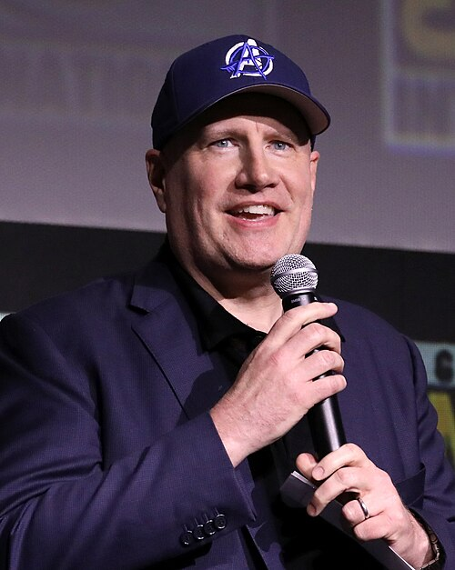
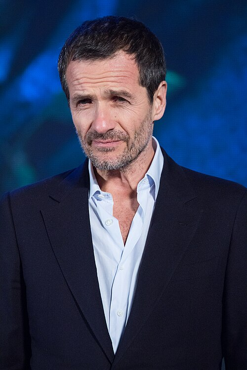
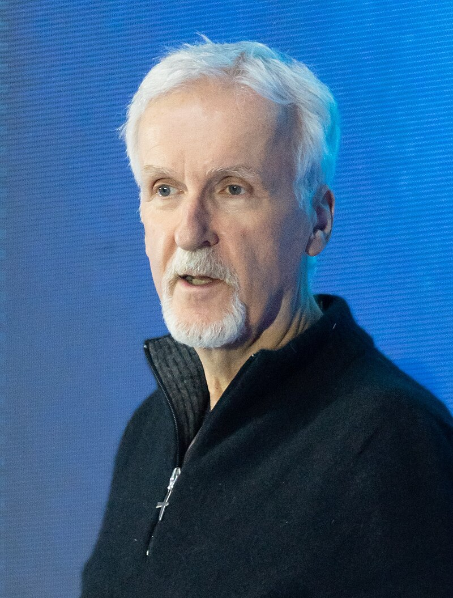
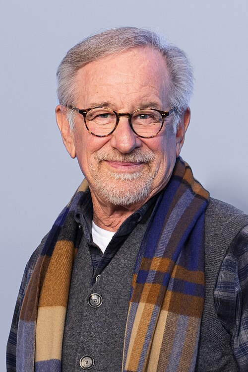
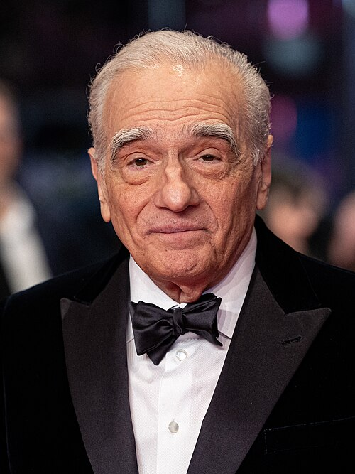
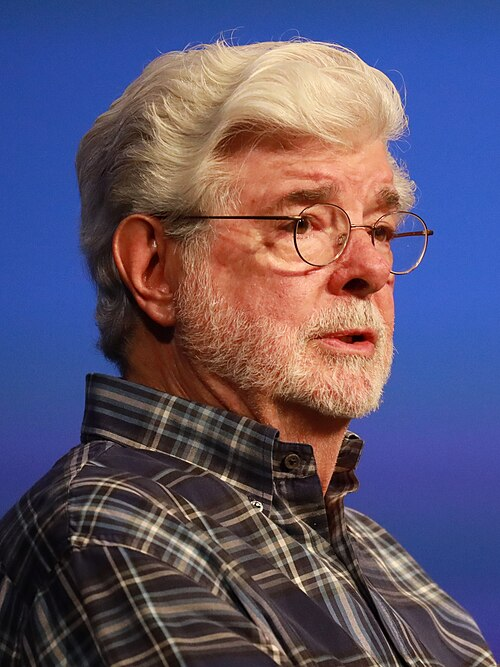
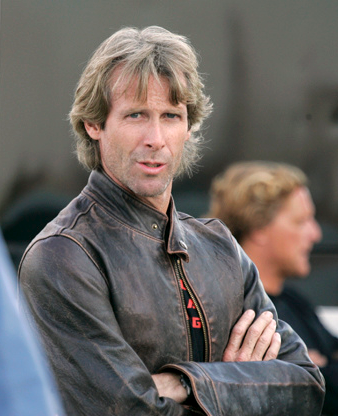
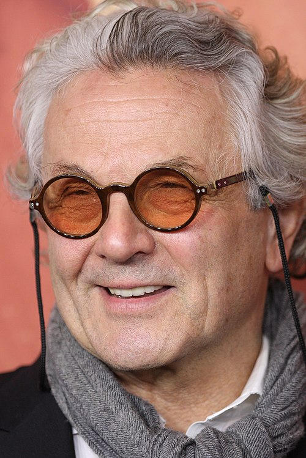
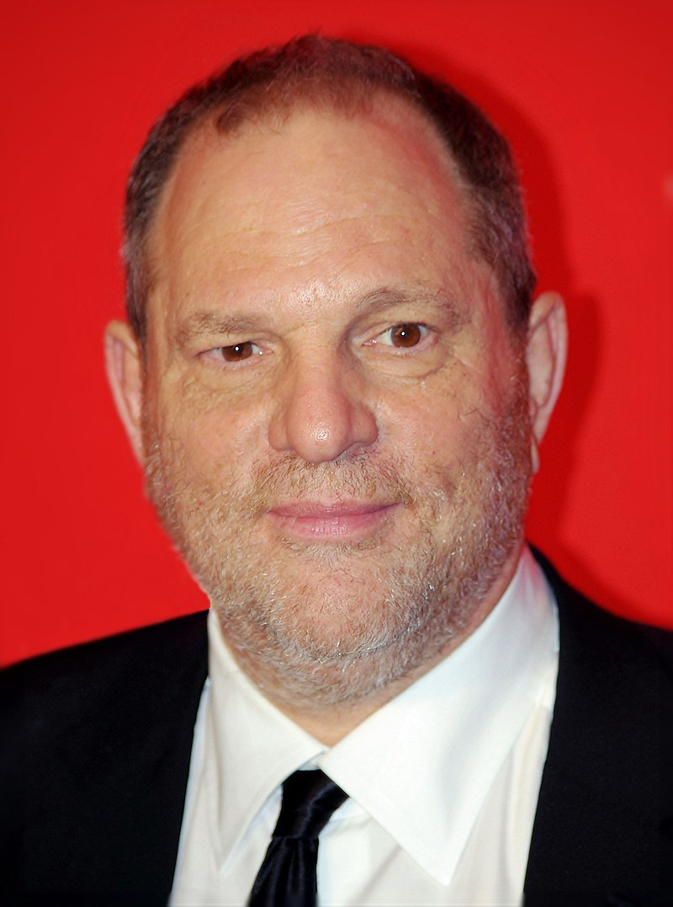
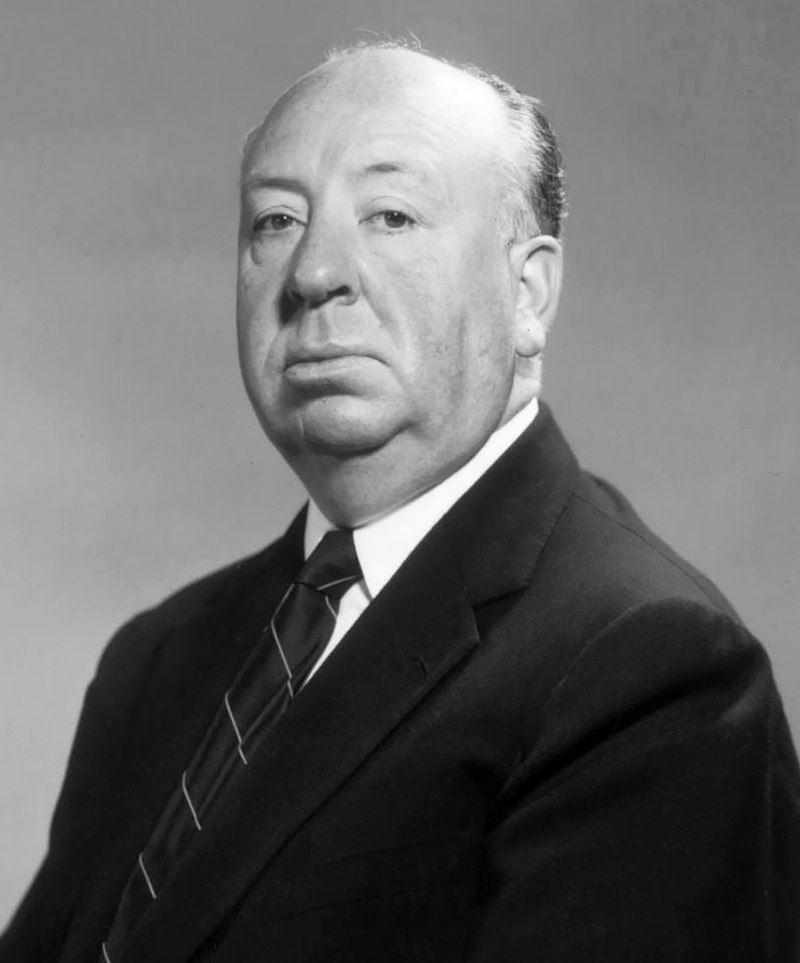

Cette page est dédiée aux architectes du 7e art : les réalisateurs. De ceux qui empilent les Oscars à ceux qui ont juste pondu un film culte par accident, on les passe à la loupe. Découvre leurs obsessions, leurs coups de génie, leurs ratés… et leur amour incompréhensible pour les plans-séquences de 12 minutes.
| Réalisateur | Description | |
|---|---|---|
|  | Kevin Feige | Producteur de cinéma américain. Actuellement président de Marvel Studios, il se trouve à l'origine de la création de l'univers cinématographique Marvel. |
|  | David Heyman | Producteur britannique, créateur de la société de production Heyday Films et connu pour avoir produit la série Harry Potter. |
|  | James Cameron | Réalisateur, scénariste, producteur et explorateur de fonds marins canadien qui habite en Nouvelle-Zélande. Il a réalisé et écrit les films Terminator (1984), Aliens, le retour (1986), Abyss (1989), Terminator 2 : Le Jugement dernier (1991), True Lies (1994), Titanic (1997), Avatar (2009) et Avatar : La Voie de l'eau (2022). |
|  | Steven Spielberg | Réalisateur, producteur et scénariste américain. Réalisateur le plus rentable de l'histoire du cinéma, Spielberg est considéré comme l’un des plus importants et influents cinéastes. |
|  | Martin Scorsese | Réalisateur, acteur, scénariste et producteur de cinéma américain. De parents d'origine sicilienne, il passe son enfance dans le quartier new-yorkais de Little Italy qui lui inspire de nombreux films. |
|  | George Lucas | réalisateur, producteur et scénariste américain. Issu de l'école de cinéma de l'université de Californie du Sud à Los Angeles, crée sa propre société de production : Lucasfilm. Il connaît ensuite la consécration avec les deux premières trilogies cinématographiques Star Wars |
|  | Micheal Bay | Réalisateur, producteur de cinéma et acteur américain. Il réalise, entre autres, Armageddon, Pearl Harbor, Bad Boys II et The Island. La saga Transformers, dont il dirige les cinq premiers volets de 2007 à 2017, lui vaut un énorme succès. |
|  | George Miller | Réalisateur, scénariste et producteur de cinéma australien. Parmi ses films les plus connus, on compte la saga Mad Max. |
|  | Harvey Weinstein | Criminel sexuel américain et ancien producteur de cinéma. Fondateur et dirigeant avec son frère Robert des sociétés de production Miramax et The Weinstein Company |
|  | Alfred Hitchcock | Réalisateur, scénariste et producteur de cinéma britannico-américain. Plus grand cinéaste selon un classement dressé en 2007 par la critique au Royaume-Uni, The Daily Telegraph écrit : « Hitchcock a fait davantage qu'aucun autre réalisateur pour façonner le cinéma moderne, lequel sans lui serait tout à fait différent. Il possédait un flair pour la narration, en dissimulant avec cruauté des informations cruciales et en provoquant comme nul autre les émotions du public » |